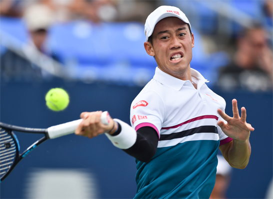
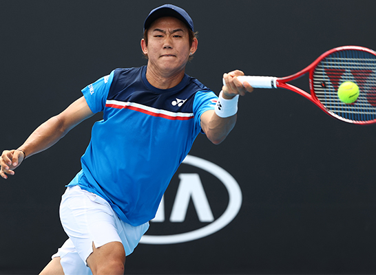

facebook
twitter
‣2020/02/10(月)
男子テニスの２月３日付ATP世界ランキングが発表され、錦織圭は前回から８つ下げて２６位へ後退し、２０１８年８月以来 約１年半ぶりの２０位台となった。
２日まで開催された全豪オープン（オーストラリア/メルボルン、ハード、グランドスラム）で２年連続８度目の優勝を飾ったＮ・ジョコビッチ（セルビア）は前回から１つ上げて１位となった。
男子テニスのニューヨーク・オープン（アメリカ/ニューヨーク、室内ハード、ATP250）は１３日、シングルス２回戦が行われ、世界ランク６４位の西岡良仁は第３シードのＲ・オペルカ（アメリカ）に4-6, 4-6のストレートで敗れ、ベスト８進出とはならなかった。
西岡は試合後ツイッターを更新し「二回戦4-6.4-6で負けました。ブレークチャンスありましたが、欲しい時にサーブで凌がれ取れませんでした。キープしなければならないというプレッシャーがあり攻め切れなかったりミスが出たりしてブレークされると言う展開でした。次のデルレイビーチ頑張ります」と綴った。
‣2020/02/10(月)
‣2020/02/10(月)
男子テニスのABNアムロ世界テニス・トーナメント（オランダ/ロッテルダム、室内ハード、ATP500）は１２日、シングルス２回戦が行われ、世界ランク２１位のＦ・オジェ アリアシム（カナダ）が同２２位のＧ・ディミトロフ（ブルガリア）を6-4, 6-2のストレートで破り、ベスト８進出を果たした。
男子プロテニス協会ATPの公式サイトにはオジェ アリアシムのコメントが掲載されており「今のところ間違いなく今年最高の試合だった。始まりから終りまでやり切れた」と語った。